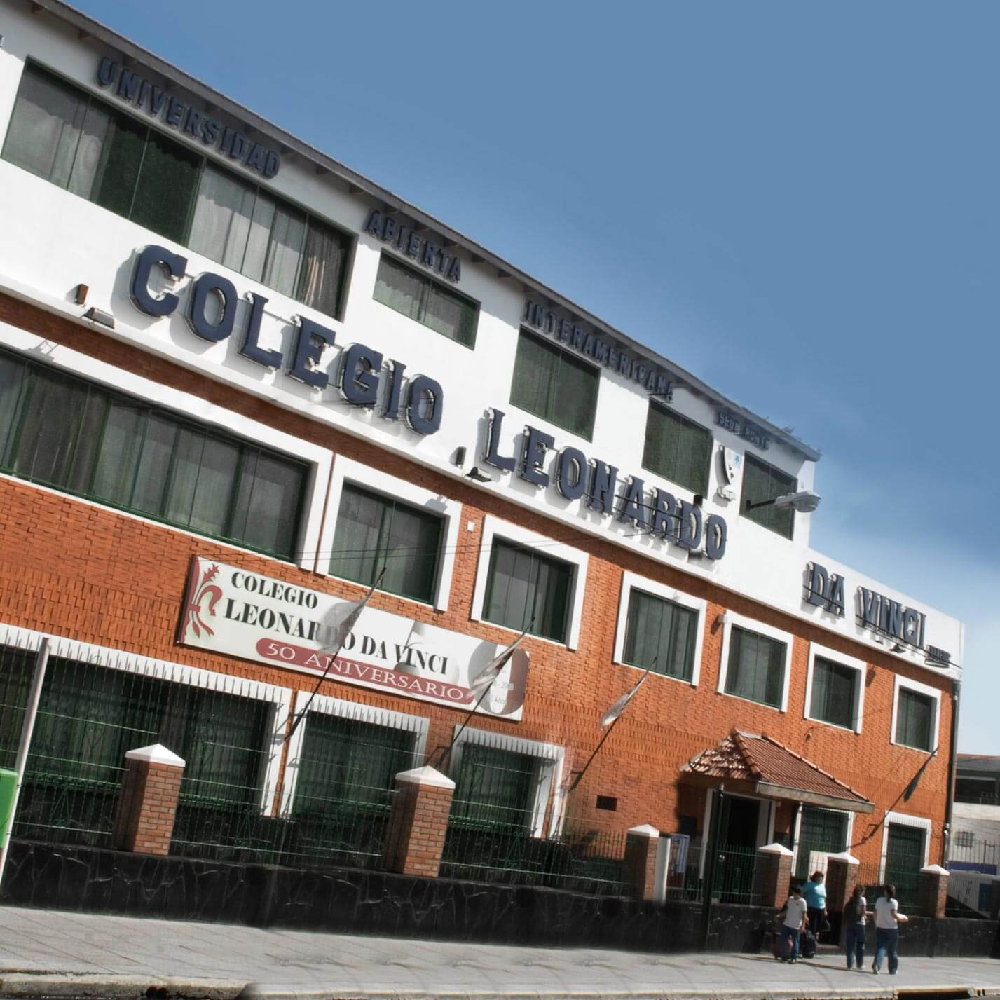

La importancia de la lectura compartida
En el corazón de nuestro proyecto educativo se encuentra la convicción de que leer juntos transforma vidas. Durante este mes, hemos implementado una nueva estrategia pedagógica enfocada en el aprendizaje colaborativo dentro de las aulas de primer ciclo. Es fundamental fomentar estos espacios de diálogo donde los niños no solo escuchan, sino que participan activamente. Según varios estudios, esta práctica mejora drásticamente el vocabulario y la empatía. Te invitamos a leer más sobre los beneficios de la lectura en la educación infantil y cómo implementarla en casa antes de ir a dormir.
Sigue en pág. 7